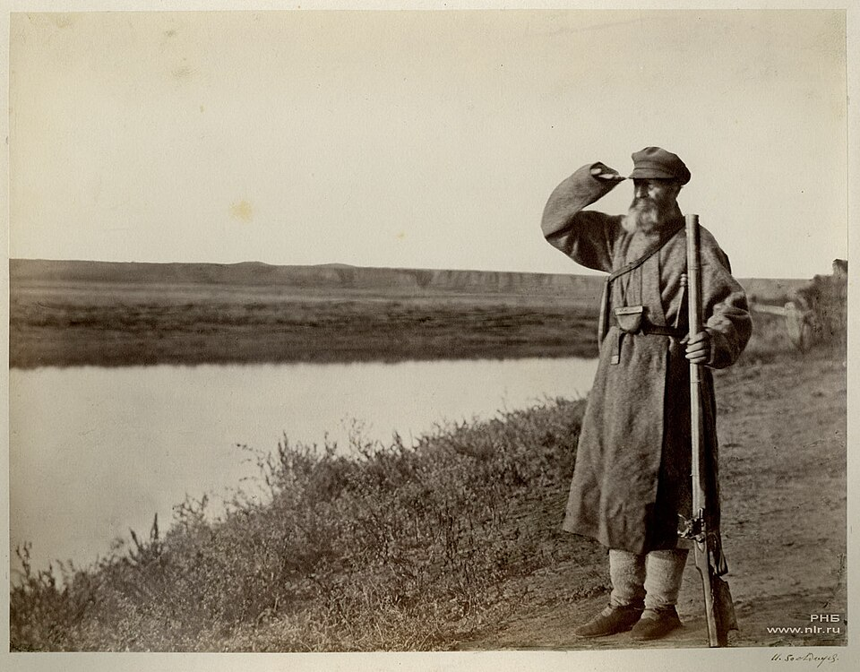
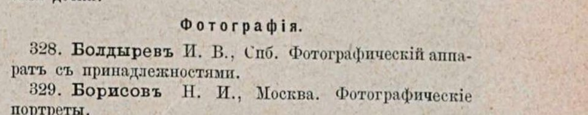

От стеклянной пластинки — к плёнке, которую не боится вода
Читается подряд. Нажми на удар — откроется подробный разбор с источниками.
Иван Болдырев родился в 1850 году в станице Терновской на Дону, в бедной казачьей семье. Грамоте он выучился поздно.Узнать подробнееСвернуть
Мать рано умерла, отец ушёл на службу, и мальчик жил у деда: с шести лет пас скотину. Читать и писать его научил отец, вернувшийся в 1864 году. Подростком Болдырев разбирал и собирал часы, а потом стал зарабатывать их починкой. Фотографии учился в Новочеркасске, а в начале 1870-х уехал в Петербург. Там он работал помощником и ретушёром в ателье Альфреда Лоренса и вольнослушателем ходил в Академию художеств.
Источники: Росфото, выставка «Фотограф-изобретатель Иван Болдырев» (2008–2009, подготовлена при участии Е. В. Бархатовой); О. Майдельман, «Как казак-изобретатель фирму Kodak обошел», «Нация», 26.12.2024.
В 1875–1876 годах он снимал станицы на Дону, и критик Владимир Стасов купил эти снимки для Публичной библиотеки.Узнать подробнееСвернуть
Цимлянская, Кумшацкая, Есауловская: базар, сход казаков, стрижка овец, проводы на службу. Стасов писал, что «Казак-стрелок» «по позе, по выражению… напоминает знаменитую картину Перова „Птицелов“», а вся серия «представляет целую галерею оригинальных и изящных картин». Серия вошла в собрание Императорской публичной библиотеки — сегодня это Российская национальная библиотека.

И. В. Болдырев. «Донской казак-стрелок», 1875–1876. Российская национальная библиотека. Викисклад, общественное достояние. Источники: Е. Бархатова, «Донские сюжеты Ивана Болдырева», «Наше наследие», 1989, № 4; О. Майдельман, «Нация», 2024.
Негатив тогда снимали на стеклянную пластинку — хрупкую и неудобную в дороге. Заменить стекло пытались многие.Узнать подробнееСвернуть
Пластинки пробовали делать из каучука, гуммиарабика, желатина и даже из столярного клея с жидким стеклом. В фотографическом отделе Русского технического общества Леон Варнерке заявлял о «чувствительной негативной ткани». Болдырев знал об этих опытах и считал, что ни один материал не годится.
Источники: Е. Бархатова, «Наше наследие», 1989, № 4; О. Майдельман, «Нация», 2024.
В 1878 году Болдырев почти год просидел в комнате над массой для плёнки, которая заменила бы стекло.Узнать подробнееСвернуть
Позже он вспоминал об этом в брошюре о своих изобретениях:
«В 1878 году мне пришлось около года просиживать в комнате целые дни и ночи над приготовлением массы, из которой получалась бы пленка, соответствующая стеклу».
Из чего он варил эту массу, источники страницы не говорят. Сам Болдырев называл свою плёнку «смоловидной», то есть похожей на смолу.
Источник: О. Майдельман, «Нация», 2024 (цитата из брошюры И. В. Болдырева); Е. Бархатова, «Наше наследие», 1989, № 4.
Болдырев снял за этой работой сам себя. Надпись на снимке сделал Стасов.Узнать подробнееСвернуть
Убогая комната, стол прикрыт рваной газетой, на нём склянки с реактивами стоят рядом с чайником, за столом — Болдырев. На снимке надпись рукой Стасова: «Ив. Вас. Болдырев за изобретением смоловидной плёнки-пластинки. 1878 год». Снимок хранится в Российской национальной библиотеке; он показан выше, в блоке «Документ».
Источники: Е. Бархатова, «Наше наследие», 1989, № 4; Росфото, 2008–2009.
Плёнка вышла прозрачной и гибкой. Изобретатель писал, что её не портят ни жара, ни сырость, ни сутки в воде.Узнать подробнееСвернуть
Болдырев описал свою плёнку в брошюре, которая вышла в 1883 году:
«…не изменяется ни от высокой температуры, ни от сырости и положенная с негативным изображением на сутки в воду… была так же прозрачна и эластична…»
Это слова самого изобретателя. Отчёта о независимых испытаниях с цифрами источники не приводят.
Источники: Е. Бархатова, «Наше наследие», 1989, № 4; Росфото, 2008–2009 (брошюра 1883 года).
В 1880 году Болдырев показал плёночные негативы и снимки с них фотографическому отделу Технического общества. Отдел об этом нигде не написал.Узнать подробнееСвернуть
«Несмотря на то, что негативные пленки и напечатанные с них позитивы я в 1880 году показал и объяснил заседанию V-го отдела, отдел почему-то не позаботился даже пропечатать об этом, вследствие чего никто не мог прочесть относительно моих пленок».
V отдел Императорского Русского технического общества, отдел светописи, объединял лучших фотографов страны. Двумя годами раньше Болдырев показывал там свой объектив — и тоже не получил признания.
Источники: О. Майдельман, «Нация», 2024 (слова Болдырева); Е. Бархатова, «Наше наследие», 1989, № 4.
В 1882 году Болдырев выставил плёнку на Всероссийской художественно-промышленной выставке в Москве. В каталоге он записан под номером 328.Узнать подробнееСвернуть
В разделе «Фотография» указателя экспонентов записано: «328. Болдырев И. В., Спб. Фотографический аппарат с принадлежностями». Плёнку в этом списке отдельно не назвали. Но, по словам Росфото, Болдырев показал около пятидесяти снимков и свои изобретения, среди них — смоловидную плёнку.

«Иллюстрированное описание Всероссийской художественно-промышленной выставки в Москве 1882 года», № 12, с. 95. Скан — Internet Archive, общественное достояние. Источники: «Иллюстрированное описание Всероссийской художественно-промышленной выставки в Москве 1882 года», № 12, с. 95; Росфото, 2008–2009.
Жюри дало ему бронзовую медаль — за снимки, а не за плёнку.Узнать подробнееСвернуть
Награда была «за фотографические снимки, сделанные особыми, придуманными экспонентом способами и приёмами». В списке бронзовых медалистов выставки он стоит во второй группе, среди научно-учебных экспонатов. Сами «принадлежности», ради которых Болдырев приехал, жюри никак не отметило. Знаток фотографии В. И. Срезневский писал в журнале «Фотограф», что плёнка — «выдумка, бесспорно, достойная внимания и полезная». Ценным изобретением он её не считал.
Источники: Президентская библиотека, «Иван Васильевич Болдырев»; «Иллюстрированное описание…», № 25–26, с. 199; Е. Бархатова, «Наше наследие», 1989, № 4; О. Майдельман, «Нация», 2024.
Плёнку успешно испытали в военно-учебном ведомстве, и её одобрил Дмитрий Менделеев.Узнать подробнееСвернуть
Испытания прошли в Учёной комиссии педагогического музея военно-учебных заведений. Менделеев, который и сам увлекался фотографией, отозвался о плёнке одобрительно. Но промышленники ею не заинтересовались, а поддержки Технического общества Болдырев так и не получил.
Источники: Е. Бархатова, «Наше наследие», 1989, № 4; Росфото, 2008–2009.
Взять привилегию и открыть фабрику Болдыреву было не на что. Об этом он прямо написал в брошюре 1886 года.Узнать подробнееСвернуть
«Теперь оставалось бы только пользоваться изобретением смоловидной пленки для практического применения ее в широких размерах и сохранить честь изобретения за Россией… К сожалению, я лично не обладаю достаточными средствами для того, чтобы повести дело приготовления пленок фабричным путем».
Привилегией в России тогда называли патент, и за неё платили пошлину. Привилегию Болдыреву советовали взять ещё на объектив, но денег на пошлину у него не нашлось. В брошюре 1886 года он подробно описал плёнку — этого никто не заметил.
Источники: О. Майдельман, «Нация», 2024 (брошюра 1886 года); Президентская библиотека; Е. Бархатова, «Наше наследие», 1989, № 4.
В 1889 году американская фирма Истмена стала выпускать на фабрике прозрачную плёнку из целлулоида. Русские фотографы покупали привозную.Узнать подробнееСвернуть
Двумя годами раньше, в 1887 году, американец Ганнибал Гудвин предложил прозрачную гибкую плёнку из нитроцеллюлозы. В 1889 году журнал «Фотографический вестник» обещал своим читателям американскую плёнку Карбута, «прозрачную как слеза», и бумагу Истмена. По словам Бархатовой, плёнка Болдырева почти на десять лет опередила плёнку «Истмен-Кодак».
Источники: ГМИИ им. А. С. Пушкина, «Негатив на фотоплёнке (пластик)»; Е. Бархатова, «Наше наследие», 1989, № 4.